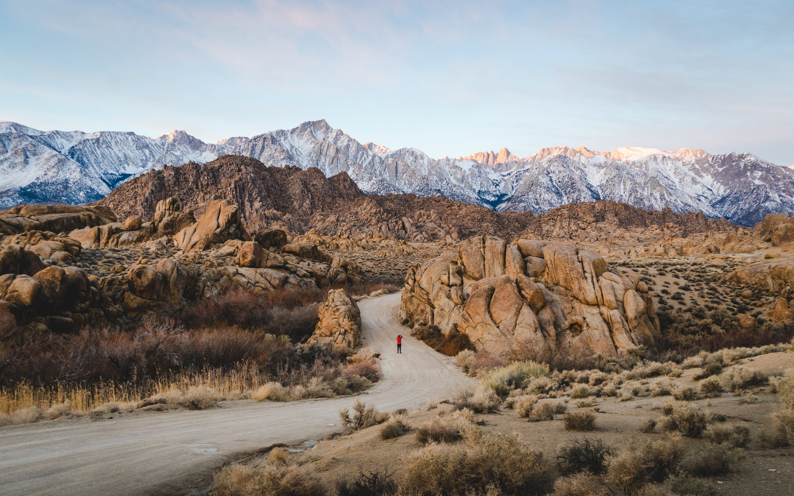
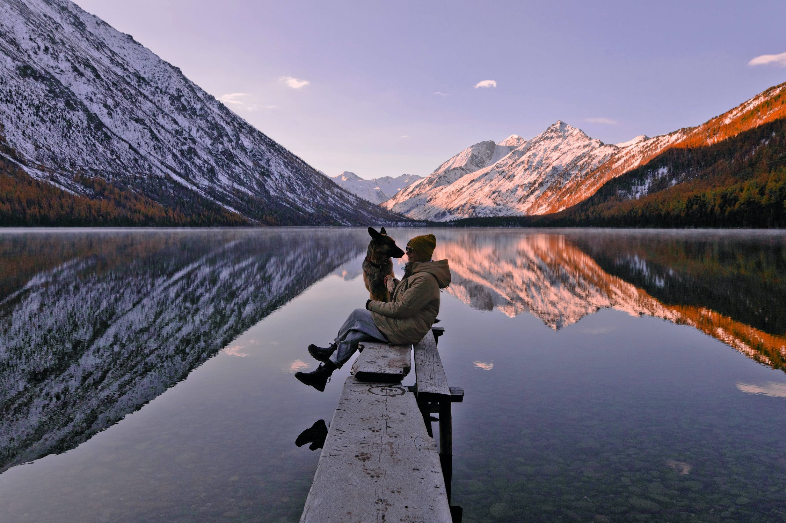

California's unique landscapes create endlessly fun hiking experiences.

If you love high altitudes then Colorado's peaks are the place for you!

The Smoky Mountains are a fantastic spot for sight-seers of the South.

Check out some of the gorgeous rock formations that call Utah home.